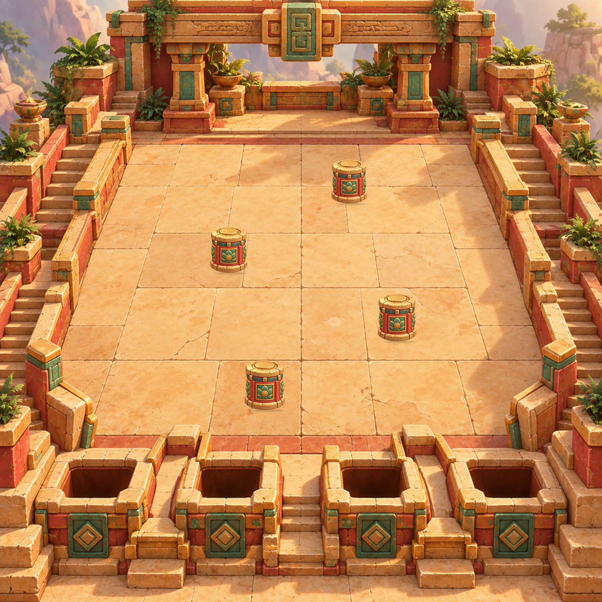
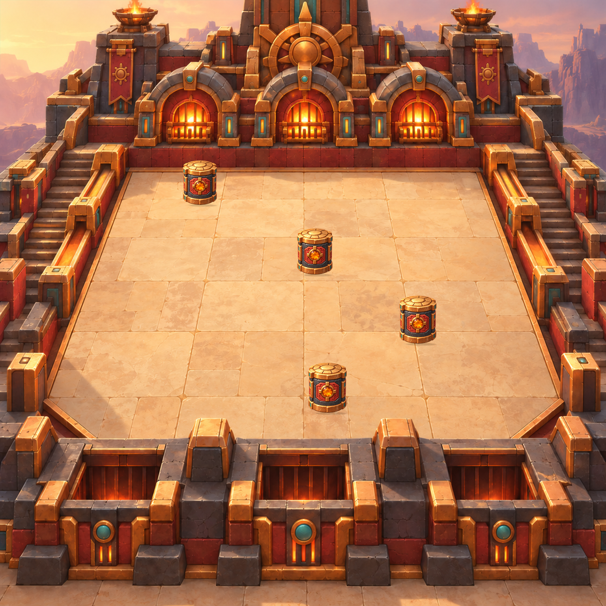

P0 · финальная серия F1–F4
Четыре независимых component set · frozen p/q/scales · deterministic composite · без control overlays




Четыре независимых component set · frozen p/q/scales · deterministic composite · без control overlays

